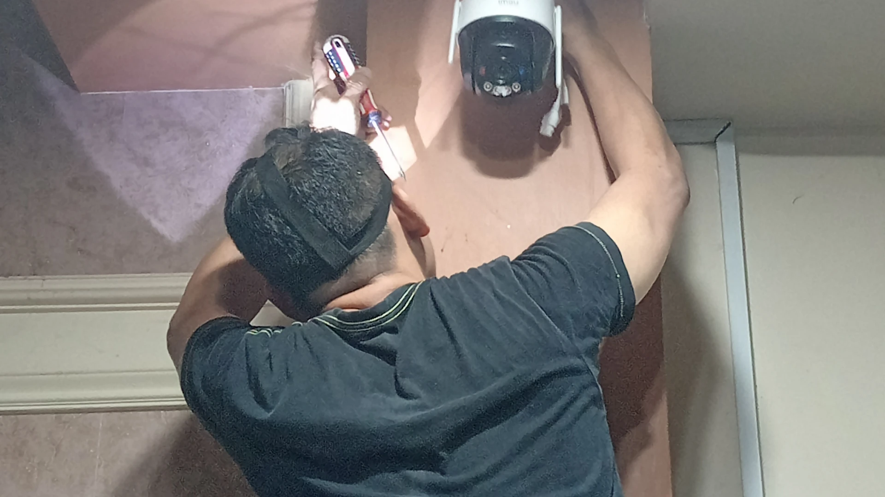
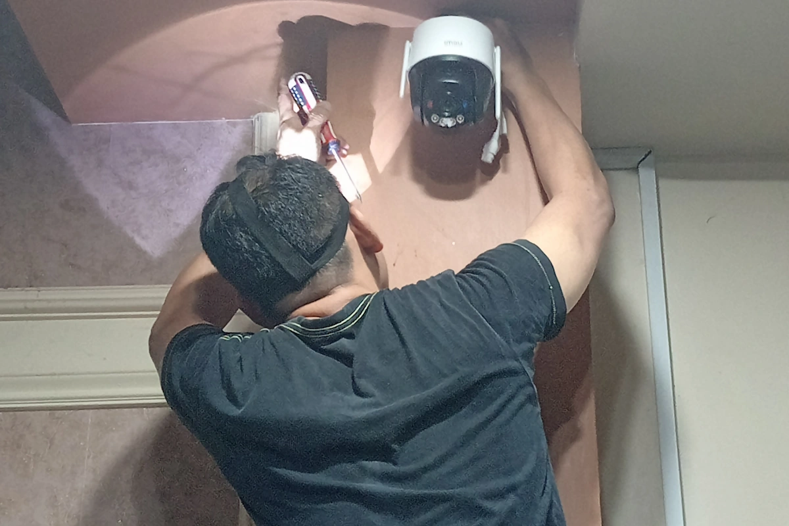
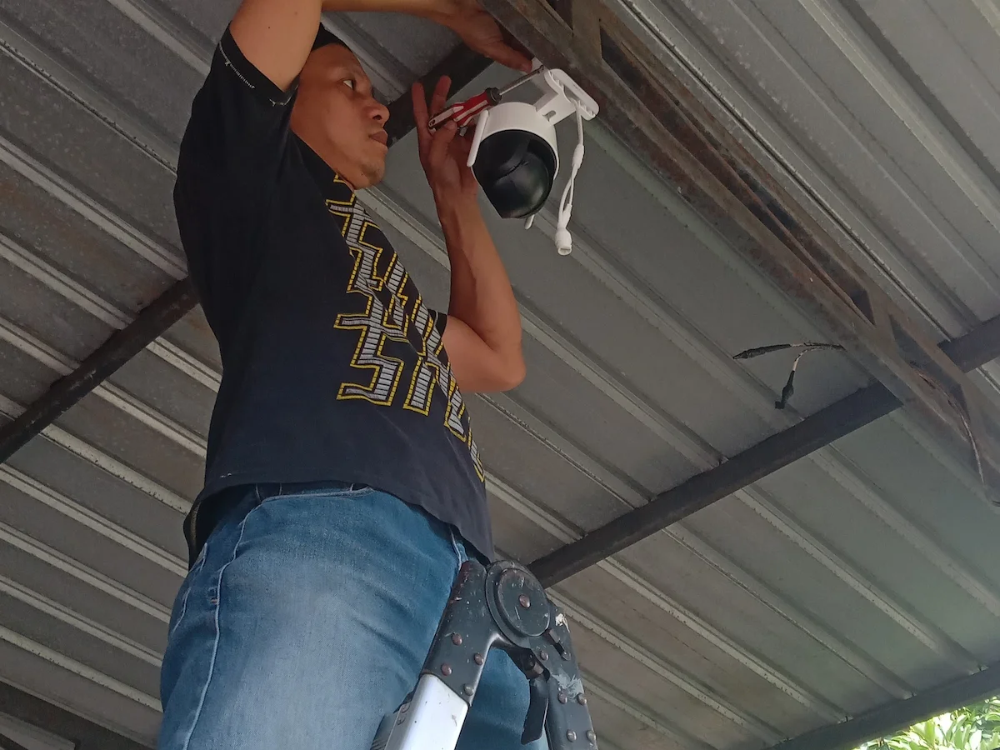
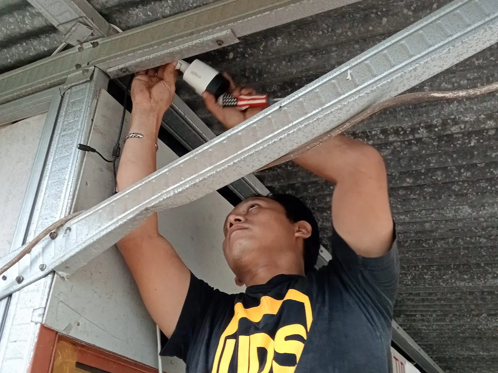
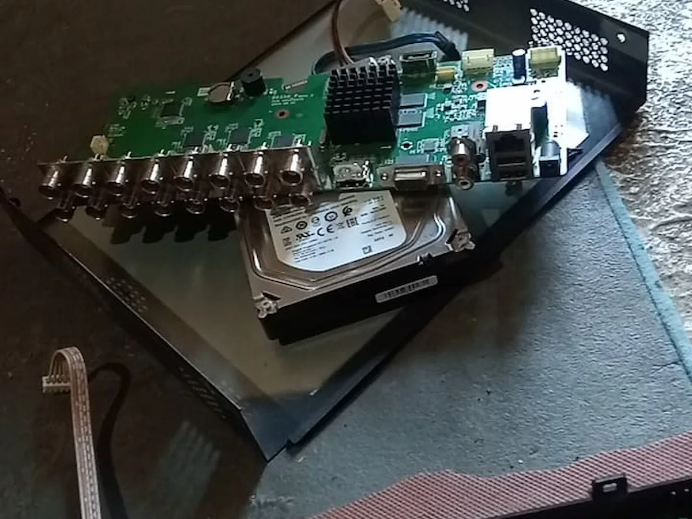
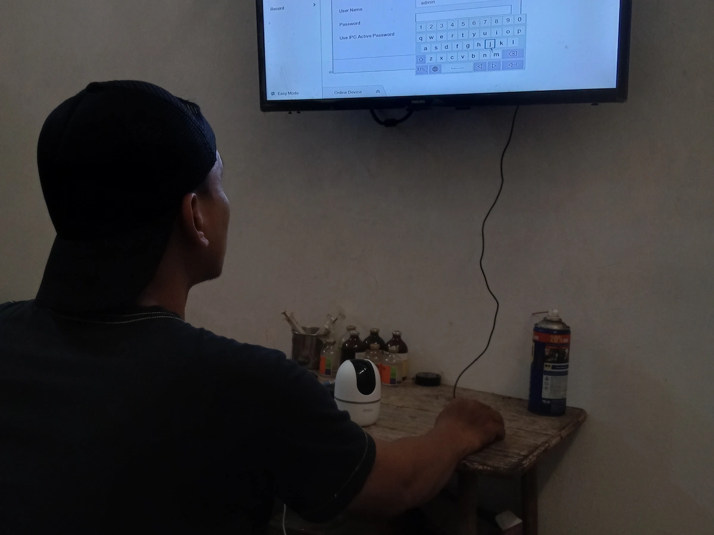

Teknisi Profesional dan Berpengalaman
Pekerjaan dimulai dengan pemeriksaan kebutuhan dan kondisi lokasi. Penataan jalur kabel, posisi kamera, serta pengujian sistem menjadi bagian dari perhatian teknis kami.

Sistem Keamanan yang Terencana
Jaga area penting tetap terpantau dengan instalasi, perawatan, dan perbaikan CCTV yang direncanakan sesuai kebutuhan. Ai Technician87 melayani rumah, kantor, gudang, dan usaha di Makassar, Gowa, serta wilayah sekitarnya.
Mengapa Ai Technician87
Kami membantu Anda memilih solusi yang relevan, memahami kondisi lokasi, dan mengetahui langkah penanganan sebelum pekerjaan dimulai.
Pekerjaan dimulai dengan pemeriksaan kebutuhan dan kondisi lokasi. Penataan jalur kabel, posisi kamera, serta pengujian sistem menjadi bagian dari perhatian teknis kami.
Bila sistem membutuhkan penyesuaian atau muncul kendala, Anda dapat menghubungi kami untuk mendiskusikan pemeriksaan lanjutan dan opsi penanganannya.
Diskusikan titik rawan, potensi blind spot, kebutuhan perangkat, dan estimasi RAB. Survei lokasi dapat dijadwalkan setelah cakupan dan kondisi pekerjaan dikonfirmasi.
Layanan Kami
Dari instalasi baru sampai penanganan gangguan, pilih layanan yang paling sesuai dengan kondisi properti Anda. Rekomendasi teknis diberikan berdasarkan kebutuhan dan perangkat yang digunakan.
Rencanakan jumlah dan posisi kamera, jalur kabel, serta perangkat perekam agar area penting terpantau tanpa pemasangan yang serampangan.
Bahas instalasiTelusuri gangguan seperti kamera tidak tampil, gambar bermasalah, perangkat offline, atau rekaman tidak berjalan untuk menentukan langkah perbaikan yang tepat.
Bahas perbaikanPemeriksaan kondisi kamera, kebersihan lensa, konektor, penyimpanan rekaman, dan status sistem untuk membantu menjaga performa perangkat.
Atur pemeriksaanBantu menyiapkan akses pemantauan jarak jauh pada perangkat yang kompatibel, termasuk pemeriksaan koneksi jaringan dan pengaturan aplikasi.
Atur konfigurasiPeriksa perangkat perekam, status hard disk, pengaturan waktu, dan alur penyimpanan agar kendala rekaman dapat ditangani berdasarkan hasil diagnosis.
Periksa sistem rekamanEvaluasi jaringan, penyesuaian pengaturan kamera, serta integrasi perangkat keamanan yang kompatibel sesuai kondisi dan kebutuhan operasional.
Konsultasi integrasi
Solusi untuk Berbagai Area
Setiap lokasi memiliki pola aktivitas dan risiko yang berbeda. Kami membantu menyusun kebutuhan CCTV berdasarkan area prioritas, akses masuk, jalur operasional, dan tujuan pemantauan Anda.
Hunian dan Apartemen
Perkantoran
Gudang dan Logistik
Toko dan Komersial
Peternakan
Area Industri
Galeri Portofolio
Lihat dokumentasi instalasi, perbaikan, perawatan, dan konfigurasi perangkat. Setiap pekerjaan tetap memerlukan pemeriksaan sesuai tipe perangkat serta kondisi lokasi.

Penempatan kamera dan jalur instalasi yang direncanakan.

Pemeriksaan sumber gangguan sebelum menentukan tindakan.

Pemeriksaan perangkat untuk menjaga fungsi dan kesiapan rekaman.

Pengaturan kamera, jaringan, dan akses pemantauan yang kompatibel.
Foto ditampilkan sebagai dokumentasi pekerjaan yang tersedia. Hasil, lingkup, dan kebutuhan setiap proyek dapat berbeda menurut kondisi lapangan.
Alur Kerja Transparan
Anda tidak harus memahami istilah teknis untuk memulai. Ceritakan kebutuhan, area yang ingin dipantau, serta kendala yang sedang dihadapi. Kami bantu menyusun langkah berikutnya dengan jelas.
Mulai Konsultasi GratisJelaskan lokasi, jumlah area, atau gejala masalah CCTV yang ditemukan.
Diskusikan perangkat, opsi penanganan, jadwal, dan kebutuhan pemeriksaan lokasi.
Pekerjaan dilanjutkan setelah kebutuhan, estimasi biaya, dan jadwal disepakati.
Konsultasi dan Kontak
Isi formulir singkat agar tim kami memperoleh gambaran awal. Setelah Anda menekan tombol kirim, pesan akan disiapkan di WhatsApp untuk Anda tinjau dan kirim.
Kolom bertanda * wajib diisi.
Informasi awal sebelum Anda menentukan layanan.
Masih ada pertanyaan?
Sampaikan kondisi perangkat atau lokasi Anda untuk mendapatkan arahan awal yang lebih relevan.
Tanyakan melalui WhatsAppLokasi dan Area Layanan
Ai Technician87 beralamat di Katangka, Kecamatan Somba Opu, Kabupaten Gowa, Sulawesi Selatan. Hubungi kami untuk mengonfirmasi jadwal dan cakupan layanan di Makassar maupun area sekitar.
Alamat
Jl. Bontobiraeng, Katangka, Somba Opu, Gowa, Sulawesi Selatan 92114